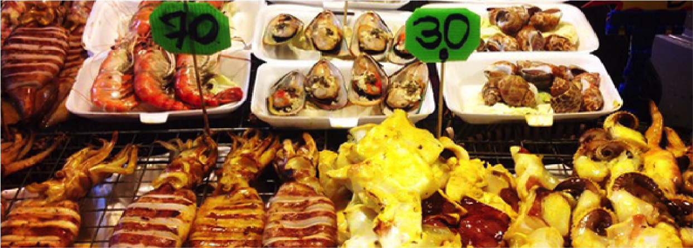
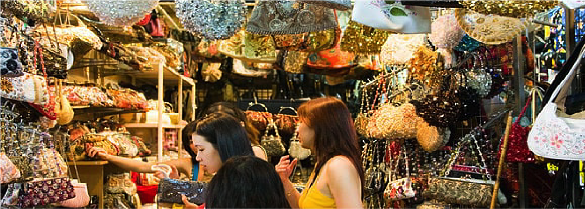
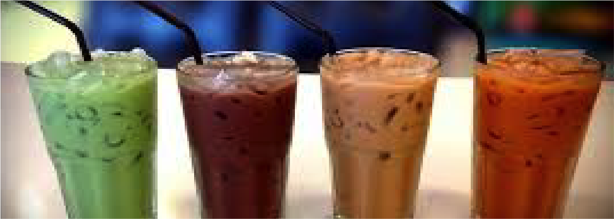

<ion-header>
  <ion-toolbar>
    <ion-buttons slot="start">
      <ion-menu-button></ion-menu-button>
    </ion-buttons>
    <ion-title>Local Map</ion-title>
  </ion-toolbar>
</ion-header>

<ion-content>
  <div id="map" #map></div>
  <div class="item-location" (click)="go2Page('/restaurants')">
    <div class="item-tittle">Eats</div>
    
  </div>
  <div class="cls"></div>
  <div class="item-location" (click)="go2Page('/shops')">
    <div class="item-tittle">Shops</div>
    
  </div>
  <div class="cls"></div>
  <div class="item-location" (click)="go2Page('/drinks')">
    <div class="item-tittle">Drinks</div>
    
  </div>

  <!-- <ion-fab left bottom>
    <button ion-fab color="danger" mini (click)="go2List()">
      <ion-icon name="md-swap"></ion-icon>
    </button>
  </ion-fab> -->
  <!-- <div class="disable-map"></div> -->
</ion-content>